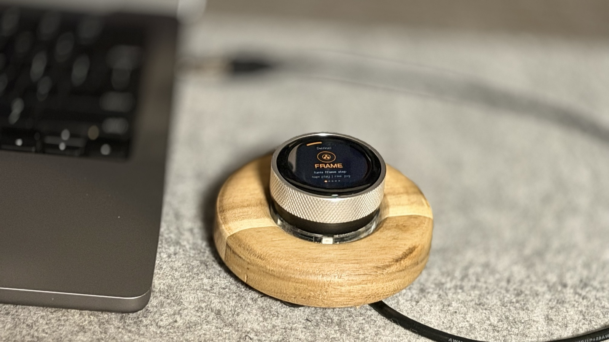
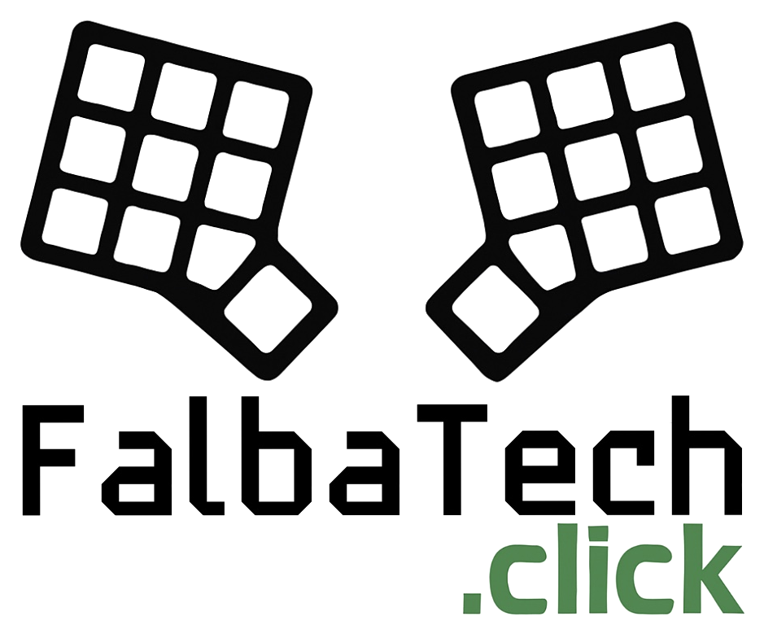
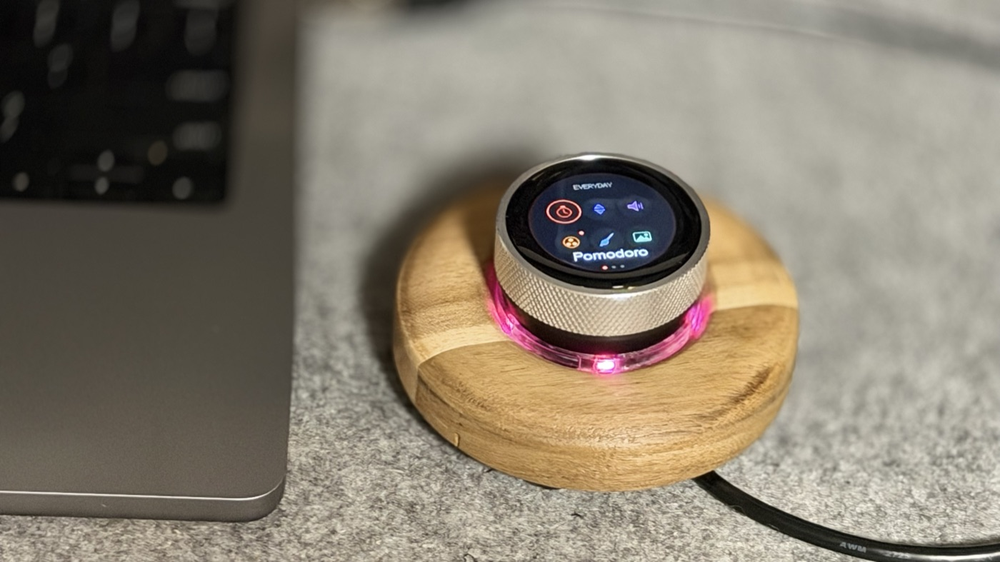

| Turn | select an icon / profile action (e.g. volume, frame) / select a row in settings |
| Click | opens an app; in a profile switches the mode (e.g. FRAME → ZOOM); in settings changes the value |
| Hold | back to the first HOME page (Pomodoro and the profile keep running) |
| Swipe | left / right: change HOME page; in a profile swipe right: back to HOME; Settings → RGB → Touch ring |
| Tap | opens an icon; in a profile the tap action (e.g. mute, play); on-screen buttons (LIKE, CAM, RESET) |
| Screen rim | Smart Touch Ring: slide your finger around the edge like a ring - fine control |
The screen dims after 45 s of inactivity (or shows the clock). The first turn, click or touch only wakes it.
Icons are arranged in pages. The dots at the bottom show the current page. Turning walks through all icons on all pages.
| EVERYDAY | Pomodoro, Smart Scroll, Volume, Media, Spotify, Meetings |
| CREATIVE | DaVinci, Premiere, Final Cut, Photoshop, Lightroom, Pixelmator |
| DESIGN | Figma, Blender, Fusion 360, KiCad |
| SYSTEM | System, Settings |
| CUSTOM / CUSTOM 2 | your profiles from the configurator (up to 12) |
Hide apps you do not use in the configurator (chapter 10). A dot next to an icon marks the active profile.
In a profile a click changes the mode (the dots under the name show which). Turning performs the mode action, tapping the center performs the tap action. Mod = Ctrl on Windows, Cmd on macOS (Settings → Host OS).
| Profile | Mode | Turn |
|---|---|---|
| Volume | VOLUME | system volume |
| tap | mute | |
| Smart Scroll | VERTICAL | scroll up / down |
| HORIZONTAL | scroll left / right | |
| tap | invert direction | |
| Media | VOLUME | volume |
| TRACK | previous / next track | |
| tap | play / pause | |
| Spotify | VOLUME | volume |
| TRACK | previous / next track | |
| SEEK | seek in track (Shift+←/→) | |
| tap | play / pause; LIKE button = like song (Alt+Shift+B) | |
| Meetings | ZOOM / TEAMS / MEET | volume; the mode selects the app |
| tap | microphone on/off (red ring = muted); CAM button = camera | |
| DaVinci Resolve | FRAME | frame step (←/→) |
| ZOOM | timeline zoom (Mod+=/-) | |
| SCROLL | timeline scroll | |
| JKL | J / L | |
| COLOR | point the mouse at a value on the Color page and turn | |
| tap | play / pause (Space); screen rim = frame jog | |
| Premiere Pro | FRAME | frame step |
| ZOOM | timeline zoom (= / -) | |
| EDIT | previous / next edit point | |
| JKL | J / L | |
| tap | play / pause; rim = jog | |
| Final Cut Pro | FRAME | frame step |
| ZOOM | zoom (Cmd+=/-) | |
| EDIT | previous / next edit point | |
| JKL | J / L | |
| tap | play / pause; rim = jog | |
| Photoshop | BRUSH | brush size ([ / ]) |
| HARDNESS | brush hardness | |
| ZOOM | zoom | |
| HISTORY | undo / redo | |
| LAYER | layer down / up | |
| tap | fit on screen (Mod+0) | |
| Lightroom Classic | ADJUST | selected slider - / + (fast turn = big steps) |
| SLIDER | previous / next slider (, / .) | |
| PHOTO | previous / next photo | |
| ZOOM | zoom | |
| tap | before / after (\) | |
| Pixelmator Pro | BRUSH | brush size |
| HARDNESS | softer / harder | |
| OPACITY | opacity 10-100% | |
| ZOOM | zoom | |
| HISTORY | undo / redo | |
| LAYER | previous / next layer | |
| tap | zoom to fit (Cmd+0) | |
| Figma | ZOOM | zoom |
| OPACITY | layer opacity 10-100% | |
| LAYER | previous / next layer (Shift+Tab / Tab) | |
| HISTORY | undo / redo | |
| tap | zoom to fit (Shift+1) | |
| Blender | ZOOM | view zoom |
| ORBIT | orbit left / right | |
| TILT | orbit up / down | |
| FRAME | frame | |
| HISTORY | undo / redo | |
| tap | view all (Home); mouse over the 3D view | |
| Fusion 360 | ZOOM | zoom |
| ORBIT | orbit (like Shift + middle mouse) | |
| PAN | pan (like middle mouse) | |
| HISTORY | undo / redo | |
| tap | fit (F6); mouse over the viewport | |
| KiCad | ZOOM | zoom |
| PAN X | pan left / right | |
| PAN Y | pan up / down | |
| LAYER | layer + / - | |
| ROTATE | rotate item (R / Shift+R) | |
| tap | Esc | |
| System | APPS | switch apps |
| DESKTOP | previous / next desktop | |
| BRIGHTNESS | screen brightness* | |
| UNDO | undo / redo | |
| tap | Mission Control / Task View |
* Brightness keys work where the system supports them (usually a built-in laptop display). Final Cut Pro and Pixelmator Pro are macOS only. In Blender and Fusion 360 keep the mouse over the 3D view.
Tracks, volume and play/pause use media keys and work even with Spotify in the background. SEEK and LIKE need the Spotify window in front. With DIAL FT Helper the screen shows cover art, title, artist and track progress.
Click to choose the app: ZOOM, TEAMS or MEET (Google Meet in a browser). Tap mutes the microphone - the RGB ring then pulses red. The CAM button toggles the camera. DIAL keeps track of the state itself; if you mute with the mouse, tap twice to get back in sync.
The COLOR mode in the DaVinci profile controls the real controls on the Color page - no software needed, also in the free DaVinci Resolve.
Smart Touch Ring: slide your finger around the screen edge. It works like a second, finer dial. Settings per profile: Settings → Touch ring (or swipe left from the RGB ring screen).
| Touch mode | SMOOTH or STEP |
| Sensitivity | LOW / MEDIUM / HIGH |
| Inertia | momentum after a flick: OFF / LOW / MEDIUM / HIGH |
| Direction | NORMAL / REVERSE |
| Adaptive | faster movement = bigger changes |
| Touch ring | on / off for this profile |
Smart Scroll: scrolling with acceleration (SMART) or constant (PRECISION), momentum and vertical / horizontal axis (click). Reversing the direction stops the momentum immediately; so does touching the screen.
Pomodoro: turn to set the focus time (when stopped), click or tap to start / pause, RESET to start over. Set the break in Settings → Pomo break. When a period ends the screen blinks and the ring flashes white. The timer keeps running while you use other profiles.
Statistics: sessions today and in the last 7 days (when DIAL knows the time - see below).
Stand-up reminder: after 50 minutes of work without a 5-minute break DIAL shows “TIME TO STAND UP”. Any input dismisses it. Turn it off in Settings → Stand-up.
Clock face: when idle DIAL shows the time, date, seconds ring, Pomodoro and the song title. DIAL has no battery clock - the time is set by the configurator (when connected) or by DIAL FT Helper (permanently). Without it the screen simply dims.
| Mode | Off, Follow (light follows the dial), Ambient, Breathe, Rainbow |
| Color | theme color, 36 hues or white - remembered separately for each theme |
| Brightness | 20-100% |
| Pomodoro | the ring shows Pomodoro progress |
| Action flash | short flash on actions |
| Idle off | turns off with the screen |
| Direction | light direction relative to the dial |
A red pulse means the microphone is muted in the Meetings profile.
| Theme | color theme: Ocean, Amber, Mint, Violet, Rose, Mono, Color (every app in its own color), FalbaTech |
| Host OS | Windows (Ctrl shortcuts) or macOS (Cmd shortcuts) - set it to match your computer |
| Scroll dir | scroll direction |
| Brightness | DIAL screen brightness |
| RGB ring | quick RGB ring on / off |
| Pomo break | Pomodoro break: 3 / 5 / 10 / 15 min |
| Touch jog ... Jog dir | DaVinci rim jog: on/off, speed, inertia, direction |
| Touch ring > | Smart Touch Ring - per-profile settings (see below) |
| Auto profile | automatic profile switching with DIAL FT Helper |
| Clock face | clock face when idle |
| Stand-up | stand-up reminder after 50 min of work |
| Tutorial > | runs the tutorial again |
| Version | firmware version |
Changes are saved automatically in DIAL.
The configurator is the page falbatech.click/dial-ft. It works in Google Chrome or Microsoft Edge on a computer - nothing to install. Everything is saved in DIAL, so it then works on any computer.
Install updates on the same page (falbatech.click/dial-ft), in the Firmware update section. Settings and custom profiles are kept.
If DIAL does not enter update mode: unplug the cable, hold the BOOT button on the back of the board, plug the cable in, release the button and start from step 2.
A small background program. Download it from the configurator. It adds:
Install: unzip the archive and run install_mac.sh in Terminal. The helper starts automatically at login. On the first song macOS asks for permission to control Spotify - click Allow. Uninstall: install_mac.sh --uninstall.
Auto profile does not switch while you are in Settings or Pomodoro. Turn it off in Settings → Auto profile.
| Problem | Solution |
|---|---|
| Shortcuts do not work on Mac (or Windows) | Set Settings → Host OS to match your computer. |
| Scrolling goes the wrong way | Settings → Scroll dir or a tap in the Smart Scroll profile. |
| No clock when idle | Connect the configurator or install DIAL FT Helper (DIAL has no battery clock). |
| COLOR moves something else | Keep the pointer over a value in Resolve, not over a node or clip. |
| No Spotify cover art | Run DIAL FT Helper and allow it to control Spotify (System Settings → Privacy → Automation). |
| The configurator cannot see DIAL | Use Chrome or Edge, close other programs using the DIAL port, reconnect the cable. |
| DIAL does not respond | Unplug and plug in the USB cable. Settings are not lost. |
| Display | round 1.28″, 240×240, touch |
| Input | dial with click, touchscreen |
| Lighting | ring of 5 RGB LEDs |
| Processor | ESP32-S3 |
| Connector | USB-C, power and data |
| Systems | macOS, Windows, Linux |
| Housing | wooden base, metal ring |
| Firmware | DFTv1.3 |
FalbaTech · falbatech.click